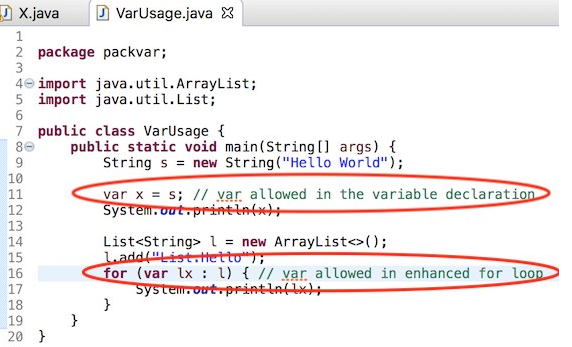
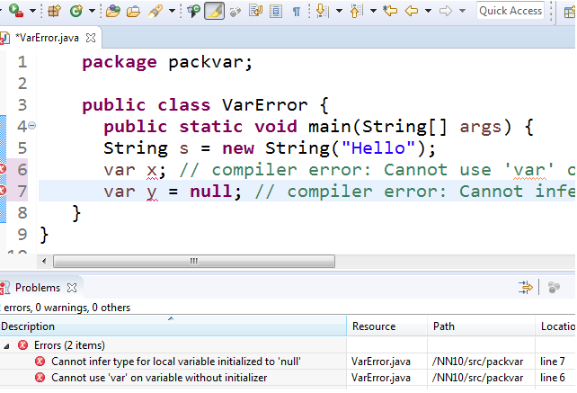
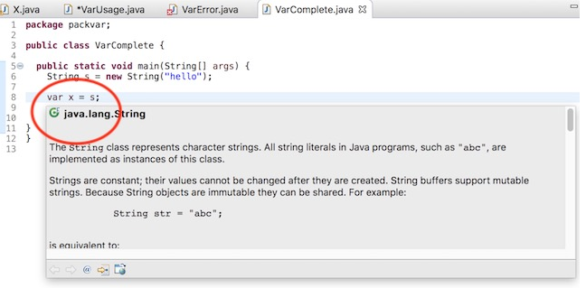
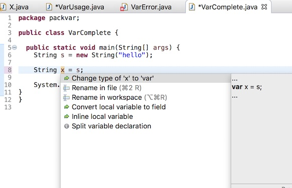

Basic necessity of recognizing a Java 10 for launching

And the compiler compliance option of 10, of course!

Support for compilation of var as shown below

Flagging of the compiler errors as expected, shown below

Completion at places var allowed

Completion not offered at places var is not allowed

Hover to reveal the javadoc

Convert from var to the appropriate type using quick assist

Convert from type to var using quick assist
